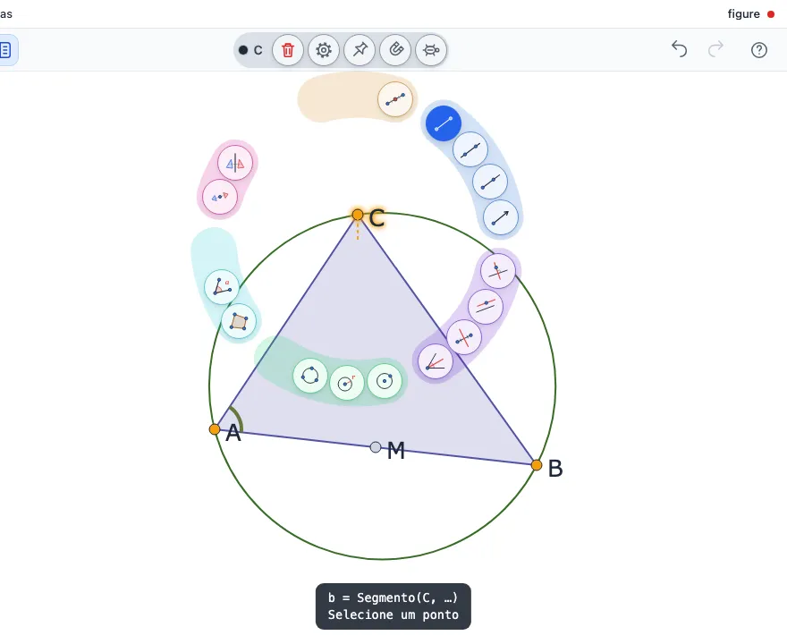

Construir com gestos
Tocar a figura
| Lugar tocado | Resultado |
|---|---|
| um lugar vazio | ponto livre (sobre o piso z = 0 em 3D) |
| perto de um cruzamento | interseção dos dois objetos, que brilham ao passar o ponteiro (a menos de 24 px) |
| um objeto | seleção e anel de suas ferramentas |
| um lugar vazio, com o anel aberto | fechamento do anel, sem criar ponto |
| um objeto, com a paleta aberta | seleção sem anel: a paleta mostra suas ferramentas |
Um texto, uma expressão ou um controle deslizante são apenas selecionados: eles não têm anel.
O anel de ferramentas

O anel só mostra as ferramentas aplicáveis ao objeto tocado. Cada ferramenta ocupa sempre o mesmo lugar; uma ferramenta não aplicável deixa seu lugar vazio. Famílias, no sentido horário a partir do topo:
| Família | Ferramentas |
|---|---|
| Pontos | ponto sobre objeto, interseção, ponto médio ou centro |
| Retas | segmento, reta, semirreta, vetor |
| Construções | perpendicular, paralela, mediatriz, bissetriz |
| Círculos | centro e ponto, centro e raio, três pontos, esfera (3D) |
| Polígonos, ângulos, lugares | polígono, ângulo, lugar |
| Transformações | simetrias central e axial |
Passar o ponteiro sobre uma ferramenta mostra na indicação a
linha que ela vai escrever e o argumento esperado:
b = Segmento(C, …), “Selecione um ponto”. As ações
sobre o próprio objeto (excluir, configurar…) ficam na
zona contextual
da barra.
Selecionar os argumentos
Escolhida a ferramenta, uma pré-visualização do objeto segue o ponteiro e os objetos aceitos brilham ao passar por cima. Onde se espera um ponto, seleciona-se à escolha um ponto existente, um objeto (é criado um ponto sobre objeto), um cruzamento (é criada uma interseção) ou um lugar vazio (é criado um ponto livre).
- Polígono: os vértices e depois de novo o primeiro. Arrastar um polígono cujos vértices são pontos livres o desloca em bloco, a menos que esteja fixo (Objeto fixo nas propriedades).
- Círculo (centro e raio): criado com um clique, raio de cerca de 150 px arredondado a dois algarismos; arrastar o círculo altera o raio.
- Lugar geométrico: proposto num ponto que depende de um ponto sobre objeto; criado com um clique.
- Ângulo e bissetriz: um ponto do primeiro lado, o vértice, um ponto do segundo lado.
Casos particulares
- Objetos sobrepostos: um menu dá a linha de cada um; ao passar sobre ela, o objeto brilha. Um ponto tem sempre prioridade, e um cruzamento dá diretamente a interseção.
- Com o dedo: durante uma ferramenta, o dedo apoiado mostra a pré-visualização sem mover nada e seleciona ao ser levantado. Pode-se pressionar o ícone e deslizar até o alvo num só gesto.
- Borda da janela: o anel se desloca para caber inteiro, ligado ao objeto por uma linha pontilhada; ele segue o objeto se a figura se mexe.
- Abandonar: Esc ou o ✕ da indicação.
- Mover: durante uma ferramenta, arrastar serve para mirar; o botão direito sempre move objetos e vista.